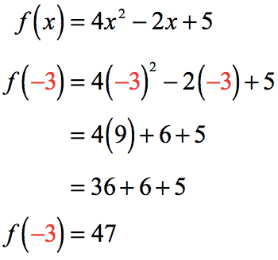
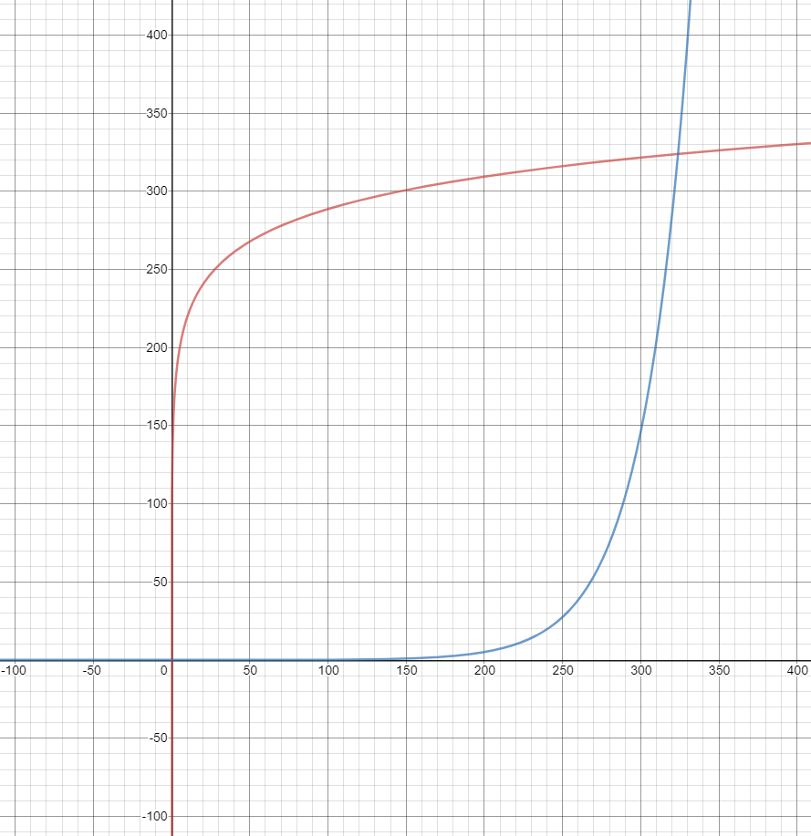
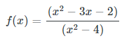
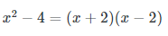
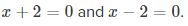
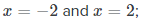
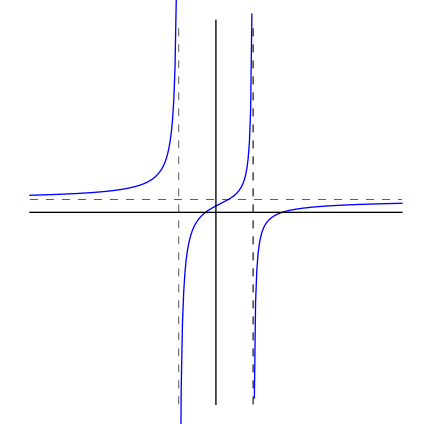

Unit 2 Summary - IB Math SL Year 2
Piero Maddaleni - 9/16/19
- Function Basics:
- Function Notation:
- Function notation is the way a function is written. It is meant to be a precise way of giving information about the function without a rather lengthy written explanation.
- The most popular function notation is f (x) which is read "f of x".
- This is NOT the multiplication of f times x..
- Traditionally, functions are referred to by single letter names, such as f, g, h and so on.
- Any letter(s), however, may be used to name a function. Examples:
- The f (x) notation is another way of representing the y-value in a function, y = f (x).
- The y-axis may even be labeled as the f (x) axis, when graphing.
- Ordered pairs may be written as (x, f (x)), instead of (x, y).
- Composition of Functions:
- In mathematics, function composition is an operation that takes two functions f and g and produces a function h such that h(x) = g(f(x)). ... The resulting composite function is denoted g ∘ f : X → Z, defined by (g ∘ f )(x) = g(f(x)) for all x in X.
- 
- Inverse Functions:
- When creating an inverse function, the x and the y (or f(x) are swapped and then the equation is put into function notation. For example, the function f(x) = 2x+3, has an inverse of (y-3)/2.
- Example:
- Using the formulas from above, we can start with x=4:
- f(4) = 2(4)+3 = 11
- We can then use the inverse on the 11 -- f-1(11) = (11-3)/2 = 4 -- And we magically get 4 back again!
- We can write that in one line: f-1( f(4) ) = 4
- Inverse vs Regular Functions While Graphing:
- Red: Original - y = 69log(x/8008)+420
- Blue: Inverse - x = 69log(y/8008)+420
- 
- Note: the X and Y axis are swapped
- Finding Zeros, Maximums, or Minimums:
- Graph the function
- Press [2nd][TRACE] to access the Calculate menu.
- Select either Zero, Maximum, or Minimum for what you are trying to solve
- Use the arrow keys to move the marker to the left of the Zero, Maximum, or Minimum and press [ENTER]
- Use the arrow keys to move the marker to the right of the Zero, Maximum, or Minimum and press [ENTER]
- The Zero, Maximum, or Minimum will now appear.
- Using the Table Effectively:
- Using the tableset window, one can set the start of the table and the x jump between each line
- Quadratic Forms:
- Different forms:
- Standard form: y = ax2 + bx + c where the a,b, and c are just numbers.
- Factored form: y = (ax + c)(bx + d) again the a,b,c, and d are just numbers.
- Vertex form: y = a(x + b)2 + c again the a, b, and c are just numbers.
- Converting:
- If we have a quadratic ax^2 + bx + x = 0 (Standard Form), with solutions x1 and x2, then we can factor the quadratic as a(x-x1)(x-x2) (Factored Form)
- Back to our standard form, if we factor out ax^2 and bx only to get an even factor, and then adding c to the end will get Vertex form
- To get from Factored or Vertex form to Standard form, just multiply it out.
- Solving:
- Graph it and find the zeros or factor it and set it equal to 0
- Exponent and Log:
- Rules:
![These are the common log rules that are very useful in the study of algebra. The assumption is that the base b is greater than 1, that is b>1, and M, N, and k can be any real numbers but M and N must be positive real numbers. Rule 1 is called the Product Rule of logarithm which states that the log of base b of the product of M and M is equal to the log of base b of M plus log of base b of N. In symbol, it is log b (MN) = log b M + log b N. Rule 2 is called the Quotient Rule of logarithm which states that the log of base b of the quotient of M and N is equal to log of base b of M minus log of base b of N. In symbol, we can write this as log b (M/N) = log b M - log b N. Rule 3 is called the Power Rule of logarithm which states that the log of base b of M to the power of k is the k multiplied to the log of base b of M. In symbol, log b (M^k) = (k)*(log b M). Rule 4 is called the Logarithm of 1 Rule which states that the logarithm of 1 of base b is always equal to 0. In symbol, log b (1) = 0. Rule 5 simply states that the logarithm of base b of b is 1, that means, log b (b) = 1. Rule 6 states that the log of base b of b raised to the power of k is k. In math form, log b (b^k) = k. The last rule is rule 7 which states that b raised to the power of the logarithm of k of base b is k. In equation, we can write this as b^[log base b of k) = k.](images/image1.gif)
- Inverse Log:
- All factors about X and Y are flipped
- Transformations:
- Adding to h makes graph go right
- Adding to k makes graph go up
- Rational Functions:
- Example Function:
- Consider the rational function
- 
- The domain of this function includes all values of x, except where x^2 - 4 = 0
- We can factor the denominator to find the singularities of the function:
- 
- Setting each linear factor equal to zero, we have
- Solving each of these yields solutions hus, the domain includes all x not equal to 2 or −2. This can be seen in the graph below.
- 